The Tube Screamer TS808 by Ibanez is the most famous overdrive guitar pedal. It is suitable for blues and all range of rock music, adding a classic standard tone characterized by the tubelike distortion, good sustain, and smooth overdrive. The frequency response is tailored to emphasize the mid frequencies, creating a hump that helps to keep the guitar sound over the general mix of the band.
In terms of electronic design, the hit of the pedal remains on how the signal is filtered and distorted over the stages. The clever schematic is easy to understand and prone to modifications. The circuit was designed in 1979-1980 by S. Tamura, a Japanese Engineer working for Nisshin Onpa/Maxon, an Original Equipment Manufacturer for Ibanez.
Due to the pedal success, several versions and reissues were released over the years with small circuit variations. This article is focused on the first design, which is considered the most attractive: the Ibanez Tube Screamer TS808.
Table of Contents:
1. Tube Screamer Schematic.
1.1 JFET Bypass Switching.
1.1.1 JFET Switch Operation.
1.1.2 Toggle Circuit Operation.
1.1.3 True Bypass Alternative.
1.2 Power Supply.
1.3 Input Stage.
1.3.1 Input Impedance Calculation.
1.3.2 Input Buffer Gain Calculation.
1.4. Clipping Amplifier Stage.
1.4.1 Non-Inverting Opamp.
1.4.2 Clipping Diodes.
1.4.3 High Pass Filter in the Feedback Loop.
1.4.4 Low Pass Filter in the Feedback Loop.
1.5 Tone/Volume Control.
1.5.1 Main Low Pass Filter.
1.5.2 Active Tone Circuit.
1.5.3 Passive Volume Control.
1.6 Output Buffer.
2. The Tube Screamer Sound Signature.
3. Tube Screamer Frequency Response.
4. Tube Screamer Myth.
5. Resources.
1. Tube Screamer Schematic.
The Tube Screamer circuit can be broken down into some simpler blocks: JFET Bypass Switching, Power Supply, Input Buffer, Clipper Amplifier, Tone/Volume Control and Output Buffer.
The functionality is simple: The input buffer isolates the pedal from the guitar, keeping the signal fidelity. Then, the Clipping Amp stage incorporates the distortion to the signal and the Tone/Volume block will add the tonal bass/treble adjustment. Finally, the Output Buffer will prepare the signal to be injected in other pedal or amplifier. The JFET Bypass Switch task is to activate/deactivate the effect and the Power Supply stage provides energy to all the circuit.
The pedal has three knobs: Distortion, Tone and a Level. The Distortion knob controls the level of overdrive, the Tone setting adjusts the amount of treble and the Level knob controls the output volume of the pedal.
1.1 JFET Bypass Switching.
The original TS808 Tube Screamer is not True Bypass, so it needs a JFET Switch Circuit in order to activate/deactivate the effect using a simple push button. It can turn the effect on, routing the signal through the circuit core or turn it off, bypassing the pedal and keeping the guitar signal unmodified. 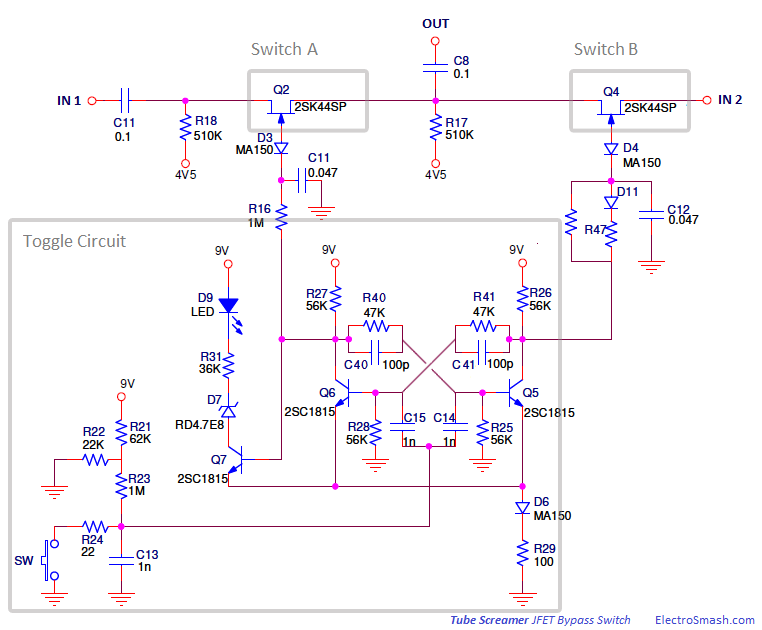
The JFET Bypass is formed by two switches and a toggle block to manage these switches:
- To activate the effect: Switch A (Q2) is on and Switch B (Q4) is off. The signal will pass through all the effect stages.
- To bypass the effect: Switch A (Q2) is off and Switch B (Q4) is on. The signal will skip the core of the effect but it will still pass through the input and the output buffer.
In both states, the signal always passes through the input and output buffer, so it will work as a buffer even whether the effect is bypassed. Buffering the guitar signal avoids tone sucking, this is the reason why some players place the Tube Screamer early in the pedal chain before other pedals without input buffer as the Wah Wah, and therefore keeping sound fidelity.
1.1.1 JFET Switch Operation.
The switches are implemented with an N-channel JFETs working in saturation/off mode. The essential part of their operation is to control the biasing of the diodes D3 and D4:
- If the diode D3 or D4 is reverse biased, (gate control voltage is at least VF higher than most positive input signal amplitude) the JFET switch is on and the signal passes through.
- If the diode D3 or D4 is forward biased, (gate control voltage is at least VF more negative than the pinch-off voltage of the FET) the switch is off and the FET presents a high impedance.
Note that VF is the forward voltage of the diode.
In practice:
- JFET is off when VG<VD and VG<VS. To do this VG must be grounded, being more negative than the VD and VS and forwarding the diode. The drain and sources are biased to 4.5V with high value 510K resistors R18/R17/R12. The capacitors C11 and C8 at the input and output side keep the JFET DC conditions isolated from the rest of the circuit. In order to turn off the JFET, the gate control voltage must go down almost to 0V.
- JFET is on when VGS=0. To do this the diode can be reverse-biased applying 9V to the gate control pin (cathode), the resistance between drain and source will go down to the lowest possible value.
The JFET control signal is applied through 1 MΩ resistors R16 and R47 protecting the gates from high current peaks. The 4.7 nF capacitors C11 and C12 are used to dampen the switching transients preventing the JFET from switching in nanoseconds. This keeps the switch from popping audibly.
1.1.2 Toggle Circuit Operation.
The Toggle Circuit generates from the pedal push button the signals in charge of activating and deactivating the switches A and B. This circuit must always start with the pedal in bypass state and ready to be activated: 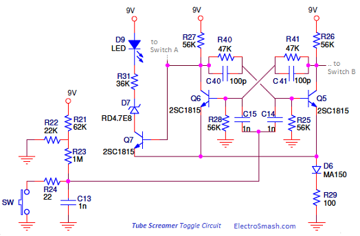
Q6 and Q5 are simple DC amplifiers, they are set up so they feed each other in a loop:
- When Q6 is on, it will be pulling current through R27, and its collector potential will be nearly 0. That pulls R40 to ground, and prevents the base of Q5 from getting any drive signal to turn it on, and so the collector of Q5 nearly at 9V. With the collector of Q5 off, a current goes through R26 and R41, providing current to the base of Q6 and keeping it on. So Q1 stays on as long as nothing else happens.
- If the base of Q6 is momentarily shorted to ground, it would quit pulling current through R27 and hold the junction of R27 and R40 down. That would let current flow through R40 to the base of Q5, and turn on Q5, pulling down on R41 and R26, and robbing Q6 of base drive. We would now find that Q6 would stay off and Q5 would stay on.
This toggle/flip-flop/multivibrator circuit has two exchanged conditions. Every time the active transistor is turned off, the other transistor comes on. Connecting the collector of Q6 to Switch A (Q2) and the collector of Q5 to Switch B (Q4) control terminal, the alternating action will activate/bypass the effect.
The rest of the components surrounding the toggle circuit will make it work with a single momentary contact for the footswitch and to operate reliable and fast:
- C40 and C41 are speed-up capacitors which make the toggling action faster and surer.
- C14 and C15 connect the bases of the transistors to the footswitch signal.
- The footswitch circuit formed by R21, R22, R23, R24, SW, and C13 applies a negative going blip to both of the transistor bases. The blip does not affect the off transistor but the one that is on starts turning off, and that is enough to make them toggle into the other condition.
- The Zener Diode D7 and the Resistor R31 lower the loading on the transistor Q7 collector, it prevents the LED from disturbing the toggle behavior.
- How to start the pedal up in the same state?: The two halves of the toggle circuit are equal. So a slight difference in the speed-up capacitors C40 C41 will unbalance the system and make it starts always in bypassed mode. The transistor with the bigger cap connected to its collector will come on faster.
1.1.3 True Bypass Alternative.
Most of the clones and expensive boutique pedals use true bypass switches, they give the cleanest possible path for the bypassed signal. 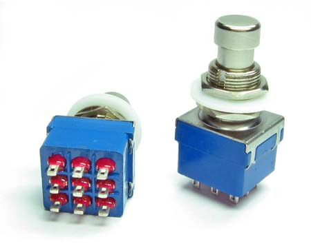 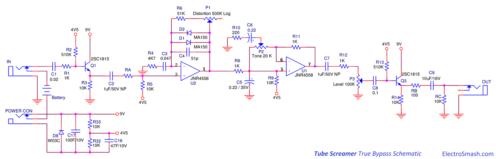
The solution is mechanically arranged using a Triple Pole Double Throw 3PDT switch to bypass the signal and light a power-on LED at the same time. The switch toggles the guitar signal to flow either into the effect circuitry or straight from the input jack to the output jack of the stompbox where the guitar signal never even touches the input of the effect.
Tube Screamer True Bypass Part List / Bill of Materials:
2 Diode MA150/1N4148/1N914 (D1, D2)
1 Diode W03C/1N4001 (D8)
2 Transistors 2SC1815/2N5089/MPSA18 (Q1, Q3)
1 IC JRC4558/RC4559/RC4558
1 Capacitor 100uF 10V (C17)
1 Capacitor 47uF 10V (C16)
1 Capacitor 10uF 16V (C9)
2 Capacitors 1uF NP/50V (C2, C7)
2 Capacitors 0.22uF (C5, C6)
1 Capacitor 0.1uF (C8)
1 Capacitor 0.047uF (C3)
1 Capacitor 0.02uF (C1)
1 Capacitor 51pF (C4)
2 Resistors 510K (R2, R13)
1 Resistor 51K (R6)
7 Resistors 10K (R3, R5, R9, R14, RC, R32, R33)
1 Resistor 4K7 (R4)
4 Resistors 1K (R1, R8, R11, R12)
1 Resistor 220 (R10)
1 Resistor 100 (RB)
1 Potentiometer 500K/470K Log (P1)
1 Potentiometer 20K/22K Lin (P2)
1 Potentiometer 100K Lin (P3)
1 Jack 6mm Chassis Stereo
1 Jack 6mm Chassis Mono
1 Jack chassis power supply
1 footswitch 3PDT
1 9V battery clip
Note: RA 0Ω
RB 100
RC 10K
1.2 Power Supply.
The Power Supply Stage provides the electrical power and bias voltage to all the circuit: 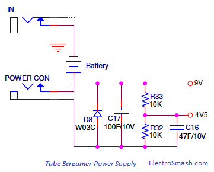
The 9V supply is common to all circuit components, with a simple resistor divider (R32, R33) 4.5 voltage is generated to be used as a bias voltage in some stages.
The main supply (+9V) and the resistors junction (+4.5V) are decoupled to ground with a large value electrolytic capacitors C16 (47uF) and C17 (100uF) to remove all ripple from the supply voltage. The diode D8 protects the pedal against reverse polarity connections.
The stereo in jack is used as an on-off switch, switching the battery (-) terminal to ground when the guitar jack is connected.
1.3 Input Stage.
The task of the input stage buffer is to create a high input impedance to preserve signal integrity avoiding high-frequency signal loss. It is implemented with a plain Emitter Follower: 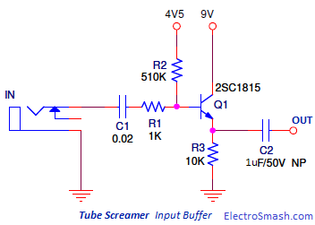
- The 2SC1815 transistor is a cheap high gain (β=350), low noise transistor. It provides unity voltage gain and high input impedance.
- The capacitor C1 separates the guitar from any pedal DC potential, protecting the pickups in case of circuit failure and filtering the low-frequency humming.
1.3.1 Tube Screamer Input Impedance Calculation.
In order to calculate numerically the input impedance of the emitter follower, the hybrid-pi model is used for analyzing the small signal behavior: 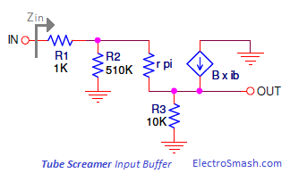
So, the Tube Screamer input impedance is 446K, almost the value of the 510K biasing resistor R2 which accounts for almost all of the signal loading at the input. Apparently, this is a high enough impedance to avoid loading guitar pickups too much. Although the best practice is to interface the guitar to an input impedance that is at least 1 MΩ.
Impedance Matching/Binding.
For maximum power transfer, the signal source (guitar pickups) and input buffer impedance should be equal, in other words, they should match each other. This is very useful in radio-frequency and critical systems where the power that is lost in a transfer process is difficult to restore.
However, in typical audio applications, we do not need maximum power transfer. If low source impedance (pickup) is connected to higher input impedance (pedal) the power transfer is limited, but in turn, the voltage transfer is higher and less prone to suffer from signal corruption. This deliberate mismatching of impedances (usually by at least a ratio of 1:10) is called impedance bridging or impedance matching. The opposite mismatching configuration would lead to signal corruption or tone sucking.
1.3.2 Tube Screamer Input Buffer Gain Calculation.
The voltage gain of an emitter follower is calculated again using the hybrid-pi model:
With:
There is no need for a gain amplification at this stage. It is more important to keep the signal uncorrupted as a foundation for the next stages.
1.4. Clipping Amplifier Stage
The Clipping Amplifier is the core of the circuit, it is formed by a variable non inverting opamp amplifier with two diodes to perform the clip action and two filters in the feedback loop ( pass-band = low-pass + high-pass) to shape the amount of clipping and the frequency at which it occurs. 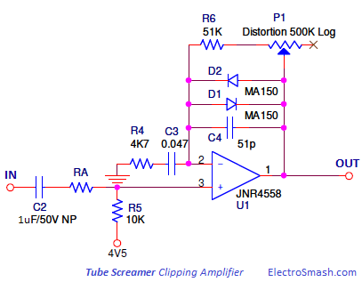
The emitter follower output feeds the Clipping Amplifier Stage through a 1uF non-polarized electrolytic coupling cap C2, large enough value to not interfere with any guitar frequency. The (+) input is biased to the 4V5 voltage source with a single moderate value R5 resistor (10K).
1.4.1 Non-Inverting Opamp.
The gain of a non-inverting opamp stage is defined by the formula:
Where:
- Z2: is the equivalent impedance between the output pin 1 of the opamp and the (-) input. So, it is the parallel combination of the clipping diodes, a 51pF capacitor and the series combination of a 51K resistor and the 500K Distortion control.
- Z1: is the equivalent impedance from the (-) input pin to ground.
- For this calculations, we are not considering yet the diodes D1 and D2, and the capacitors C3 and C4.
The gain of the whole stage can be varied changing the overdrive control setting from 500K to 0Ω:
However, the voltage gain of this stage will not reach such values as 118 (41dB). As will be seen in the next point, the gain will be limited by the clipping diodes action. The top gain will be around 12 and the additional the range from 12 to 118 will modify the slew rate or shape of the clipped signal.
1.4.2 Clipping Diodes.
The symmetric clipping is produced by 2 diodes in the feedback path of the non-inverting op-amp amplifier:
When the voltage difference (positive or negative) between the opamp output and the (-) input is bigger than the diodes forward voltage VF the diode will turn on.
As the diode turns on forward biased, the equivalent resistance of the diode goes from an open circuit to a very low value (few ohms), changing the gain of the non-inverting opamp from a high value (12 to 118) down to 1.
The diode D1 will clip the positive semi-cycle signal and D2 will clip the negative signal semi cycle:
The oscilloscope image shown above depicts the difference between the pedal input signal (pink) and the output of the clipping stage (blue), removing any of the diodes D1 or D2 will result in an asymmetric clipping. For this test, capacitors C3 and C4 are not considered.
As a rule of thumb, the nominal output amplitude of most pickups is between 60 to 200 mV (single coils) and 200 to 600 mV (humbuckers and hot pickups), with hot pickups the picking transient can be as high as 2Vpeak. The Tube Screamer with the gain set to minimum (12) the clipping amplifier is able to give a range of clean/unclipped sounds while Vin< 90mVpeak approx:
If then the signal will be unclipped:
Where:
- VF = Forward voltage of the MA150 diode, which is 1V.
In the other side, with the drive control turned up to maximum gain (118), even a 60mV signal would be boosted to 6V if not limited by the clipping diodes, so there is enough gain to give distortion at least to any guitar signal.
1.4.3 High Pass Filter in the Feedback Loop.
The series resistor R4 and capacitor C3 from the (-) input to ground act as an active high pass filter, attenuating frequencies below the fc cut-off frequency:
Harmonics above 720Hz get the full gain of the distortion stage, and everything below it gets progressively less gain and distortion. Bass notes are clipped least, so the distortion is frequency selective. 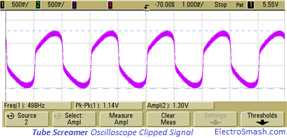
The oscilloscope image above shows the output signal of the clipping stage (pink). The soft clipped signal is curved asymmetrically due to the phase shift introduced by the high pass filter.
1.4.4 Low Pass Filter in the Feedback Loop.
The small 51pF C4 capacitor across the diodes works as a low pass filter, softening the corners of the clipped waveform and mellowing out the high end of the distortion.
The cut-off frequency of the filter is defined by the formula:
The RDISTORTION potentiometer will shift the fc frequency, making the action of the 51pF is most noticeable when the distortion control is maxed out, bringing the cut-off frequency to the audible frequencies and then softening the distortion.
- fcMAX when RDISTORTION is min = 0:
- fcMIN when RDISTORTION is max = 500K:
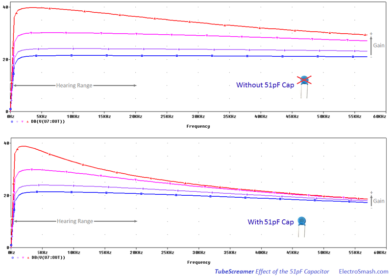
1.5 Tone/Volume Control.
This stage is formed by a passive main low pass filter, an active tone circuit, and a passive volume circuit in order to provide tone adjustment and volume control to the pedal:
The functionality is pretty elegant: The main passive low pass filter cut off the harsh overtones previous to the tone circuit. Then the active tone control will boost the treble trying to flatten the response to compensate and level the previous passive filter.
1.5.1 Main Low Pass Filter.
The C5 cap 0.22uF and the 1K resistor R7 act like a first order RC low pass filter that cut out the harsh high-frequency harmonics. That seems to be one of the underlying principles of the Tube Screamer pedal:
The cut-off frequency of the passive low pass filter is 723.4 Hz. All frequencies over it will be attenuated -20dB/dec or -6dB/8ve.
1.5.2 Active Tone Circuit.
The control is an RC network: 220 ohm R8 resistor and a 0.22uF C6 capacitor, from ground to the wiper of a 20K potentiometer strung from the (-) to the (+) input of the second opamp section. 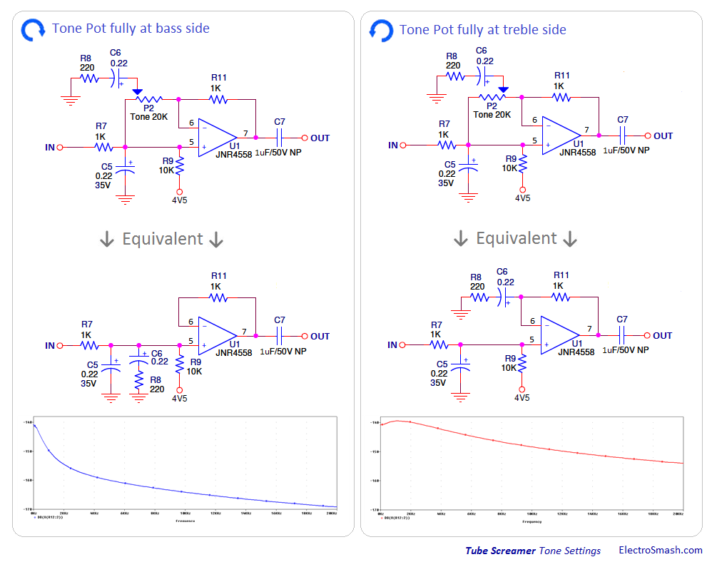
The behavior of the tone control is easy to understand analyzing the response at the extremes of the Tone Pot rotation:
- All the way to the bass side: When fully toward the (+) end, the R8C6 network will be placed in parallel with the low pass filter, resulting in a second order low pass filter, with a very low cut-off frequency that will remove all the treble.
- All the way to the treble side: When fully toward the (-) end, the R8C6 network will be placed as an active high pass filter, the network shunts feedback frequencies above 3.2KHz to ground. Resulting in a bandpass filter = R7C5 (LowPass) + R8C6 (HighPass).
The above graph shows the frequency response of the Tone/Volume circuit. The previous Clipping Amplifier Stage frequency response is not added here.
Note that the All Bass (red) tone setting actually just levels off the -20dB/dec induced by the 1K/0.22uF R7C5 network before the active control stage. The All Treble tone setting increase the -20dB/dec inducted by the 1K/0.22uF R7C5 network to -40dB/dec resulting in a second-order filter.
The 20K Tone Control G Taper Potentiometer:
The tone control potentiometer in the Tube Screamer is labeled as a "G Taper", meaning that its curve looks like this:
This G tapered potentiometer (also called "W" or "S" tapers) gives to the user more control in the middle of the sweep, so the graphs shown above on the Active Tone Circuit show all the span of the potentiometer and the extreme behavior, but the real usage of this control is focused in the middle area allowing greater control than a linear potentiometer.
1.5.3 Passive Volume Control.
The volume control is fairly standard, a 100K audio potentiometer P3 bleeds part of the input signal to AC ground.
1.6 Output Buffer.
The task of the Output Buffer is to create a unitary gain and a low output impedance to keep the signal integrity in the guitar-pedals-amp chain. Like the Input Stage, it is implemented with a plain Emitter Follower with a 10K emitter resistor R13, biased from the 4.5V bias source with R12 510K. 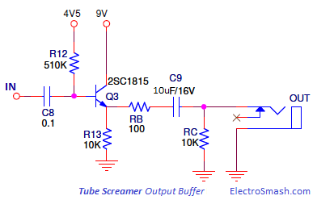
From the emitter of Q3 there is a low-value 100Ω resistor RB in series with a 10uF signal coupling capacitor C9, and at last a shunt 10K RC resistor to ground.
The oscilloscope image above shows the output signal of the Tube Screamer (green).
In order to calculate the output impedance of the Tube Screamer the hybrid-pi model is used for analyzing the small signal behavior:
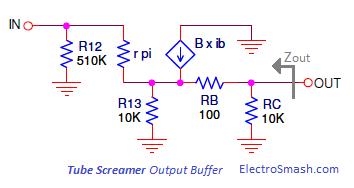
Where
Therefore the output impedance is 1K2, a low value needed to keep the guitar signal uncorrupted.
The series low value 100Ω resistor RB at the emitter slightly limits the amount of drive available to drive an amplifier. RB in concert with the series C9 10uF capacitor forms a voltage divider with the output Rc shunt resistor. This drops the available signal only a trivial amount, an inaudible amplitude difference.
2. The Tube Screamer Sound Signature.
What makes a tube screamer a tube screamer is mainly the frequency selective distortion and the signal filtering:
- In the Clipping Amplifier Stage, the bass is rolled off by the active high pass filter in the feedback loop. With this approach, the frequencies above 720Hz get the full distortion, and harmonics below it get progressively less distortion, so the distortion is frequency selective.
- The treble is shaved off after the distortion stage with a passive low pass filter, generating the distinctive mid frequencies boost.
It should also be mentioned The Tube Screamer's Secret article, where Bogac Topaktas highlight how the Tube Screamer clipped output signal contains part of the input signal, preserving the original dynamics of the guitar. Improving the clarity and responsiveness of the distortion.
Bogac also claims that part of the sound signature remains in the active high pass filter of the clipping stage which generates a phase shift in the guitar signal, bending it in an exotic asymmetric way.
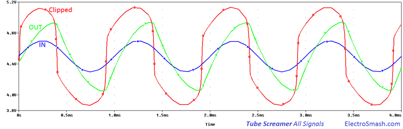
3. Tube Screamer Frequency Response.
The frequency response of the Tube Screamer is tailored to empathize the mid frequencies, creating a subtle honky tone.
To archive the tonal footprint, the signal is filtered and amplified in different stages, removing the harsh high-freq harmonics and the overloading bass presence:
- In the Clipping Amplifier Stage, there is a high pass filter in the feedback loop of the non-inverting amplifier. This active first order filter attenuates 20dB/dec harmonics below 720Hz.
- In the Tone/Volume Stage there are two important tone modifiers:
- The passive first order low pass filter formed by C5 and R7 will attenuate frequencies over 723 Hz, adding this effect to the previous filters will result in the famous mid hump.
- The active op-amp filter will provide two different responses depending on the tone pot configuration:
- Tone pot at treble side: will level the passive first order filter minimizing mid hump effect.
- Tone pot at bass side: will accentuate the passive first order filter increasing the mid hump effect and removing treble harmonics.
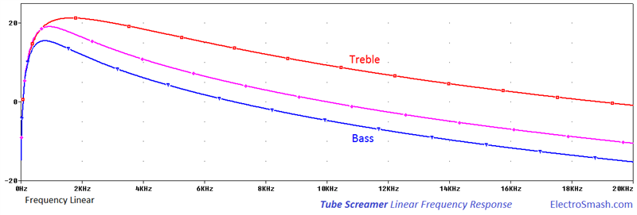
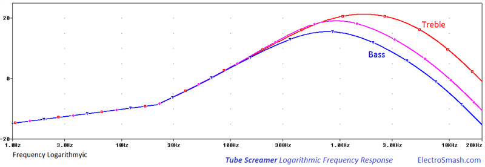
The images shown above depict the Tube Screamer mid-hump frequency response with a Linear/Logarithmic x-axis base.
Despite the simple circuit and cheap components, the Tube Screamer's price has been rising year after year. Some players pay a fortune for pedals from the first 80s releases which in theory contain the original components which give the strongest classic Tube Screamer sound. This myth is strongly linked with the dual opamp JRC4558D by Japan Radio Company produced in the Japanese facilities and used in the first pedal units that were eventually replaced by Malayan clones, Texas Instrument or Toshiba ICs.
Some people also like to replace components for vintage technology ones, like old carbon comp resistors with horrible tolerances instead of modern metal film resistors and also trying with different capacitor technologies: film, poly, metal, silver mica, tantalum, etc.
True Bypass by AMZ Guitar.
The Technology of the Tube Screamer by R.G Keen.
The Tube Screamer Secret by BogacTopaktas.
The Tube Screamer Genealogy by StinkFoot.
Tube Screamer Tone Circuit Study by AMZ Guitar.
Tube Screamer Tone Control Discussion in DIYStompBoxes.
Tube Screamer by AnalogMan.
Tube Screamer Article in Single Coil.
Teemuk Kyttala Solid State Guitar Amplifiers, the Holy Scripture.
OpAmp Filter Examples by University Las Vegas Nevada.
The Technology of Ibanez JFET Switching by AMZ
Our sincere appreciation to Romeo G. Cesar, Vibert Thio, JM Ojeda, B. Parker, A. Rödin and Charles Day for helping us with the article.
Thanks for reading, all feedback is appreciated 


{kind=link}
{kind=link}
{kind=link}
{kind=link}
{kind=link}
{kind=link}
{kind=link}
{kind=link}
{kind=link}
{kind=link}
{kind=link}
{kind=link}
{kind=link}
{kind=link}
{kind=link}
{kind=link}
{kind=link}
{kind=link}